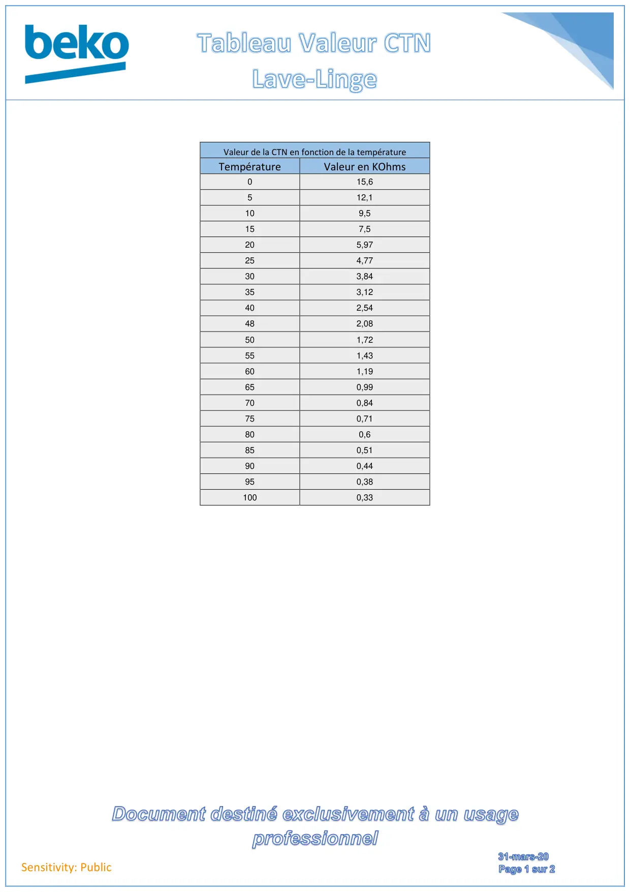
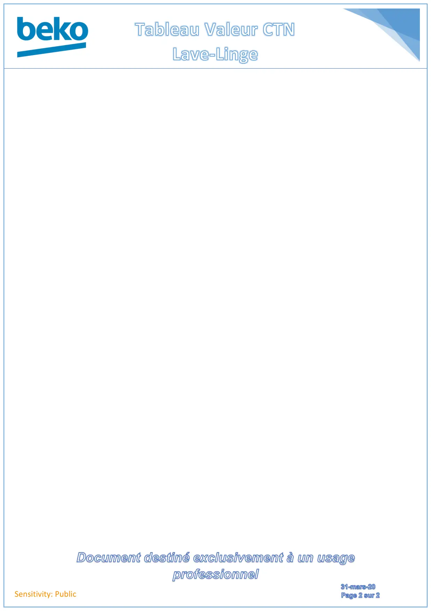

Tableau Valeur CTN lave linge

Sensitivity: PublicValeur de la CTN en fonction de la températureTempératureValeur en KOhms015,6512,1109,5157,5205,97254,77303,84353,12402,54482,08501,72551,43601,19650,99700,84750,71800,6850,51900,44950,381000,33
1 / 2
Sensitivity: Public
2 / 2